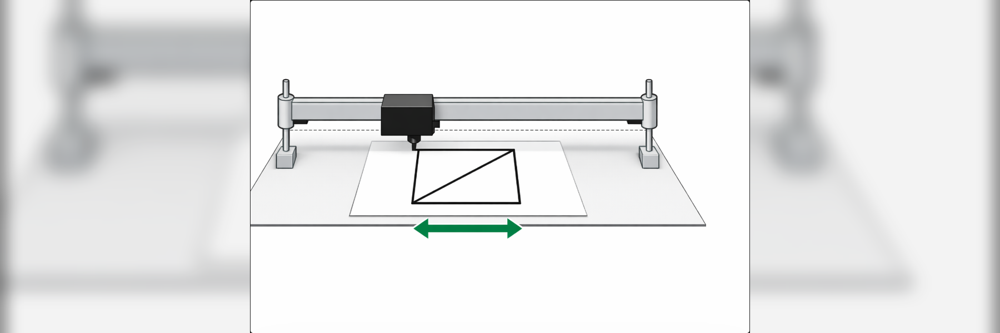

Project
Design and build a system capable of making two-dimensional drawings through electronic control of movement on two axes.
A 2D printer was developed using components salvaged from obsolete printers, including transmission belts. The system was controlled by a microcontroller programmed to execute coordinated movements on the mechanism's axes when control buttons were pressed. Mechanical, electronic, and control systems were integrated to achieve functional strokes on a surface.
Mechanical integration of the system, connection of electronic components, and programming of motion control.
A system capable of synchronization on the two transmission belts was obtained; however, the button actions for producing two-dimensional drawings still needed to be added.